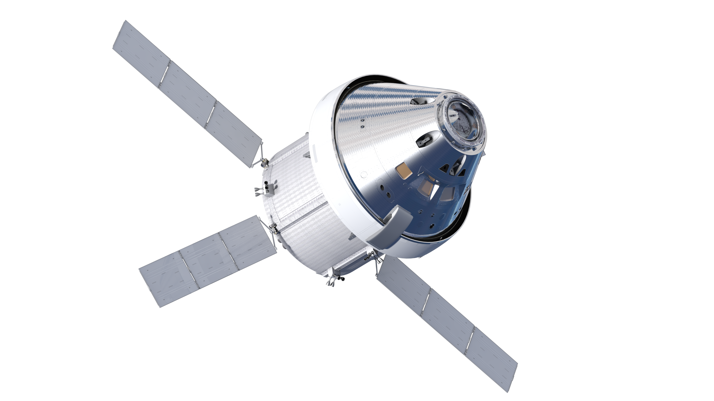
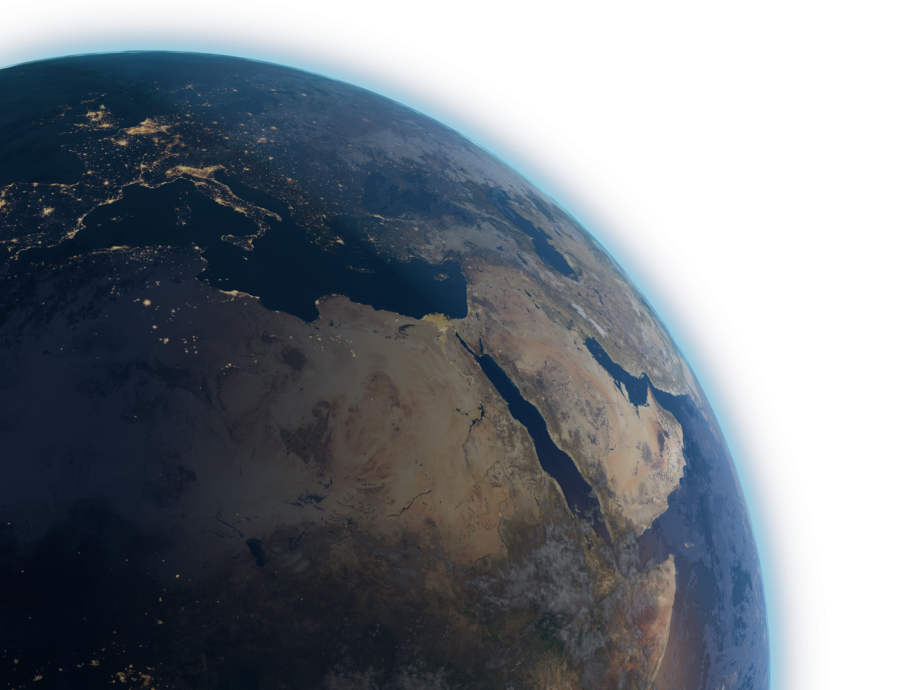
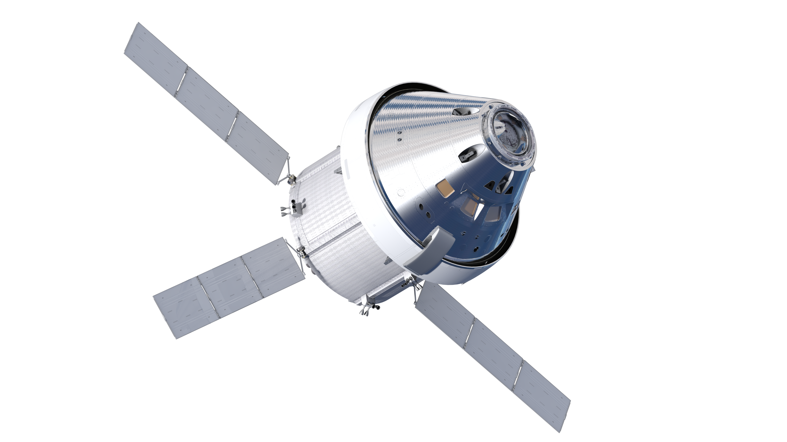
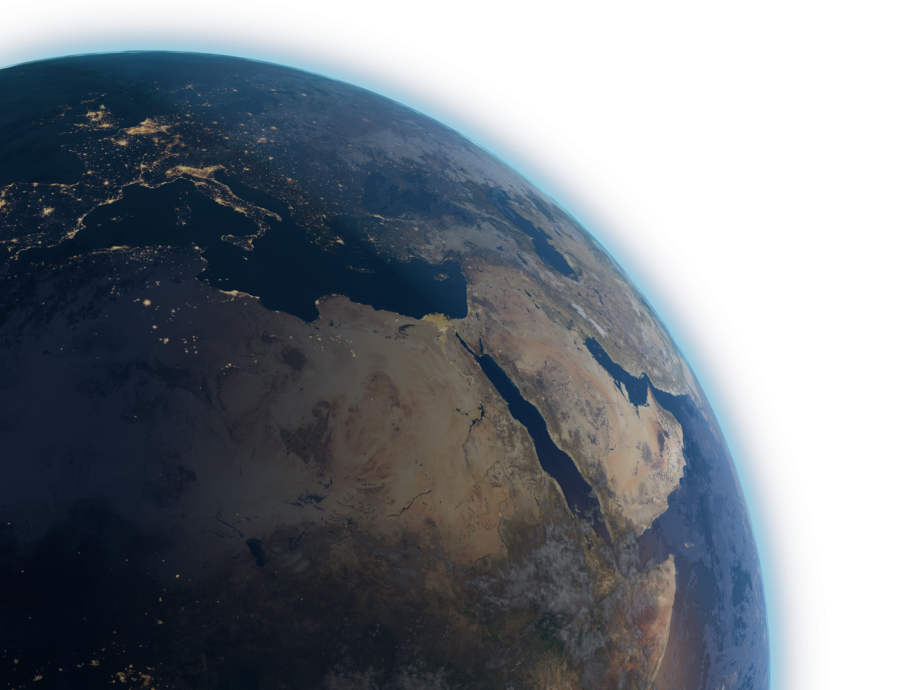
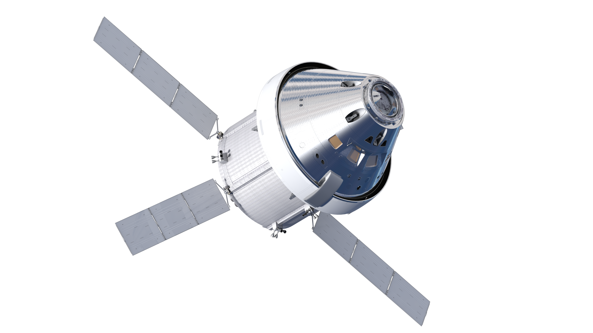
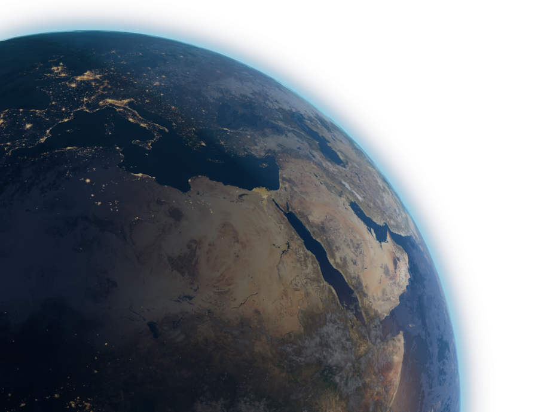

Projects & Experiences


Projects & Experiences
Like a rocket launching into space, my understanding of aerospace engineering and the professional world has just begun to take shape. Over the next few years, I aim to expand my knowledge and put everything I've learned into action.
As a part of the Europa ICONS program at NASA's Jet Propulsion Laboratory, I am studying how electron radiation affects the surface composition of Europa using laboratory analogs. I assist in preparing icy and salty samples, running irradiation experiments, and collecting FTIR and UV-Vis spectra. Our aim is to simulate Jupiter's radiation environment and understand how Europa's surface evolves over time.
I also contributed to developing automated scripts for spectral analysis and image processing using Python, helping streamline data comparison across different sample types and environmental conditions. My work supports the Europa Clipper mission, particularly the MISE and EIS instruments.
At KULR Technology Group, I worked as a Battery Test Engineering Intern where I was involved in thermal testing, data collection, and failure analysis for lithium-ion battery cells. I led the setup of a charging cart for lab operations and developed a mechanism to test battery pouch bend capacity. One of my key contributions was integrating Python-based computer vision techniques to automate part of the testing process, which improved data retention by 20 percent.
I also supported the thermal runaway testing setup and ensured all results were properly documented for customer reports. The internship gave me the opportunity to work with engineers from different departments and understand how thermal management plays a vital role in safety-critical aerospace applications.
At Kennedy Space Center's Applied Chemistry Laboratory, I contributed to the Trash to Gas project by running tests of a pure oxygen system, recording gas data, and tackling challenges related to gas systems, such as fitting failures and leak checks.
I also supported the testing and maintenance of vacuum chambers for the Molten Regolith Electrolysis (MRE) project, aimed at extracting oxygen from molten regolith, and provided analysis of gas data for the Plasma Gas Synthesis project. I also helped lead the L.O.G.I.C. (Lunar Off-Gassing Investigative Characterization) project, where I created a vacuum environment to simulate the thermal breakdown of lunar regolith by applying current through an electrode. The objective was to analyze off-gassed species using a Residual Gas Analyzer (RGA) to identify the gases released from different lunar simulants. These initial findings could support future investigations into gas composition and explore the feasibility of repurposing the emitted gases for in-situ resource utilization.
My work focused on researching cooling techniques for high-power Hall effect thrusters. Specifically, the research involved the fabrication and testing of cooling methods using a simulated plasma source, while also laying the groundwork for future thermal testing. Our primary objective was to determine whether implementing a water-cooling loop around a simulated thruster could significantly help maintain the system's thermal threshold.
My first responsibility was designing a test stand that met several key requirements, including adaptability for testing future variations, minimizing thermal contact, ensuring stability with the thruster, and allowing for adjustable height with standoffs. After completing the design, I coordinated with the machine shop to have the plate water-jetted and assembled the prototype using ceramic alumina and stainless steel components. I helped develop a test plan and manual that documented our procedures, from thermal testing to vacuum chamber operation.
At the end of the internship, I presented my research in a formal poster session, highlighting the importance of thermal management in future propulsion systems.
In June 2024, I assumed the role of Professional Development Chair at UCF IEEE to give back to my school and share my knowledge on career growth with the club. The club's board has been holding bi-weekly meetings leading up to the fall semester to prepare for events and collaborations with various companies. I have been developing plans and setting objectives for myself and my committee to meet deadlines and mitigate the workload during the fall semester.
My goal is to help our members grow professionally and teach them how to effectively market themselves to recruiters and at job fairs. Additionally, I was in charge of delegating a committee of 5 students to complete the organization and execution of events.
During the spring of 2024, I specialized in the Mechanical and Manufacturing subteam, where I contributed to the design of various rocket components and played a key role in the fabrication process. I utilized CAD software and modeling techniques to design parts such as bulkheads, umbilical systems, O-rings, and struts. To further enhance my skill set, I began expanding my knowledge of MATLAB for simulations, aiding in calculations and trajectories for model rockets.
I also volunteered in the machine shop, which not only allowed me to save the club approximately $500 in assembly costs but also provided me with fundamental knowledge and hands-on experience using essential tools at my university's machine shop, including the manual mill, boring tools, and drilling tools.
The aim of this project was to take Visible to Near Infrared (VNIR) Spectra of lunar simulants to examine the changes in porosity and albedo. My work focused on analyzing multiple samples using a Nicolet iS50 FTIR Spectrometer, ensuring accuracy by comparing my measurements with pre-existing spectra. I played a key role in developing the sample products, testing different simulants, and meticulously documenting the process for future reference and optimization.
I also modified existing Python code to identify spectral graph continuums, contributing to the evaluation of reflectance data and the calculation of albedos for 40 diverse samples, including lunar and asteroid simulants. I actively participated in weekly meetings, where I provided detailed reports or presentations on my research findings and progress updates. I also leveraged the expertise of team members, offering support in using the spectrometer and various programming languages.
In March 2024, I presented my research through my first research poster, showcasing the work I contributed to the project and its significance in planetary science. A couple of months later, I presented this research at the 2024 NASA Exploration Science Forum (NESF), led by NASA SSERVI.